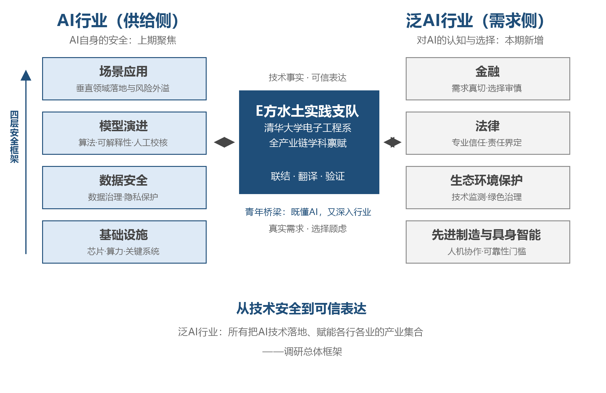
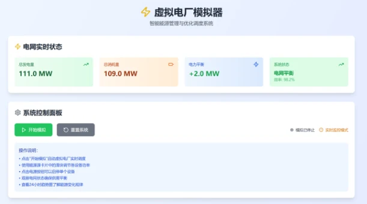

从技术安全到可信表达：泛AI行业的安全信任研究
2026年暑假清华大学学生社会实践品牌项目总结报告
从技术安全到可信表达：泛AI行业的安全信任研究*
内容摘要：在上一期关于“AI+社会治理”的调研中，我们看到人工智能在公共服务、产业升级与基层治理中的广泛渗透，也注意到技术应用在推广过程中不断遭遇隐私泄露、算法失准、系统脆弱性与责任边界不清等反向约束。本期报告由“治理成效”进一步转向“安全问题”。研究框架包含“左中右”三栏：左栏刻画AI行业的供给图景与安全能力，包含基础设施、数据安全、模型演进与场景应用四层框架；右栏聚焦泛AI行业维度，考察其在与AI公司合作中的真实需求与选择顾虑；中间以电子系实践支队为桥梁，联结两侧、翻译供需、验证可信。基于2026年寒暑期共11支支队的实地调研，报告发现：AI行业的安全工程能力已沿四层框架走向成熟，而金融、法律、环境等泛AI行业普遍呈现“需求真切、顾虑具体”的态势，供需之间存在以“风险可识别、决策可干预、责任可追溯”为解法的信任鸿沟，基于这点观察，各支队以案例数据库、合规智能体、安全核查清单等成果，验证了青年桥梁角色的可行性与有效性。
关键词：人工智能安全 泛AI行业 信任鸿沟 可信表达 伦理共治
随着人工智能逐渐深入真实场景，其安全问题已不再是附属议题，而是直接决定技术能否持续运行、能否取得信任、能否进入制度体系的关键前提。本报告在延续既有社会治理观察视角的基础上，将研究重点转入人工智能安全问题。
近半年来，人工智能产业迎来爆发式扩张，AI企业数量与上市企业数量同步激增，泛AI行业由此面临前所未有的选择空间。习近平总书记在《携手构建公正合理的全球人工智能治理体系》主旨讲话中强调“强化风险意识，确保安全可控。人工智能应当成为人类的可信工具……确保人工智能始终处于人类控制之下”[1]，本学年十一支支队由此深入泛AI产业一线，考察各行业引入人工智能的真实需求与选择顾虑。调研中我们发现，AI企业所论证的安全与泛AI行业所认定的安全并非同一回事：前者以检测准确率、系统可用性等技术指标界定，后者关心数据能否合规、责任能否兜底、业务能否连续，两套标准之间缺乏翻译与互信，构成供需对接的信任鸿沟。填平鸿沟，需要的正是既懂技术、又深入行业的翻译者与验证者——电子系在此承担桥梁角色具有内在必然性：清华大学电子工程学科覆盖人工智能全产业链，对AI行业具备系统认知；社会实践又使支队深入泛AI行业一线，掌握其真实需求与选择顾虑。唯有同时理解两侧的语言与诉求，方能承担联结供需、翻译供需、验证可信的桥梁职能。
基于此，我们聚焦供需两侧的链接。供给侧，在延续既有社会治理观察视角的基础上从AI企业的基础设施、数据治理、模型演进与场景落地四个层面，梳理当下AI安全的现实图景；需求侧，考察泛AI行业的认知与态度；供需对接侧，以支队实践探索填补二者信任鸿沟。（图1）
图1 本期调研总体框架

一、AI企业侧：四层安全治理的全覆盖认知
人工智能安全问题已不再是单一技术环节的局部漏洞，而是贯穿“基础设施—数据—模型—应用”全链条的系统性议题：无论是新型电力系统中的稳定运行，还是智慧城市中的数据流通；无论是低空飞行中的航迹规划，还是社区服务中的模型问答，人工智能一旦与真实物理世界和公共生活链接，安全就不仅局限于设备是否出错、模型是否准确，也涉及个人隐私是否受保护、决策是否可解释、责任是否可追溯、制度是否能兜底。围绕这一问题链，本学年十一支支队走访百余家企业、政府部门、高校与社区，发放有效问卷46份，形成基层访谈记录35份共19万字，沿四层框架对AI上中下游产业展开系统调研，四个层面逐次展开。
（一）基础设施安全：芯片、算力与关键系统的底座防护
基础设施层主要关注支撑人工智能稳定运行的底座条件，芯片、算力平台、工业控制系统、边缘设备、通信协议与能源网络共同构成AI系统的承载基础，一旦底座环节出现脆弱点，上层模型与应用即使设计合理，也可能因算力失稳、接口失配、控制失灵或硬件故障而整体失效。“E源蜀光”支队在成都的调研表明，AI正从发电侧预测、系统调度到设备运维全方位提升电力系统安全：电子科技大学以AI时序模型提高风电与光伏功率预测精度，降低出力波动对电网的冲击；清华四川能源互联网研究院探索构网型控制技术，使新能源设备由传统的“跟网型”升级为能够独立提供电压与频率支撑的“构网型”，在电网扰动下仍可维持稳定运行；倍特数智虚拟电厂平台聚合两百余家企业的分布式资源，最大响应约4.65万千瓦调度需求；四川能源发展集团以工程数智化管理平台识别设备劣化趋势，推动检修由“被动抢修”转向“预测性维护”。“无问锡东3.0”支队在沪锡两地观察到，沐曦以自研GPU与MXMACA软件栈降低对单一国外生态的依赖，国产算力的实际应用能力体现为芯片与软件生态的一体化；尚航云的标准化机房与万卡级组网构成AI稳定运行的物理底座；天奇自动化的实践则显示国产算力已进入具身智能、工业视觉与数字孪生等复杂制造场景。从成都的虚拟电厂到沪锡的算力集群，底座安全的重心已由设备防错转向算力自主可控与故障隔离。
（二）数据安全：AI驱动数据治理与隐私保护体系建设
在数字化治理体系中，数据既是人工智能运行的重要资源，也是智慧城市建设的重要基础，大规模数据采集与跨部门共享同步带来隐私保护与数据安全风险。“山海智城”支队在烟台调研了以“中国数港”和城市大脑为核心的数据基础设施：贯通市、县、乡、村、网格五级的政务数据平台在归集过程中完成自动化清洗与脱敏，对姓名、身份证号等敏感信息严格屏蔽；“无证明城市”建设通过AI自动核验电子证照，办事部门仅能访问办理业务所必需的信息；渤聚通的化工安全云平台以非侵入式采集与严格权限管理，在实时监测重大危险源的同时保护企业核心生产数据。“E键起杭”支队在杭州看到，覆盖主城区420平方公里、支撑交通治理与政务服务的城市大脑严格遵循“最小必要”原则，依托可信数据空间与隐私计算实现数据“可用不可见”，交通治理在线平台按“按需授权、最小够用”原则仅向治理部门开放必要数据权限；海康威视以加密通信协议与本地化智能分析降低原始数据外泄风险；恒远智能建设“产线大脑”时采用“AI建议—数字孪生验证—人工决策”的协同模式，在发挥AI数据分析优势的同时，以人工审核确保关键生产数据的安全使用。两个城市、两种路径，共同勾勒出数据安全治理的谱系：政务场景以制度先行，城市级平台以技术兜底，工业场景以权限管理为纲，数据安全治理正由单一技术防护走向技术、制度与治理的协同。
（三）模型安全：低空经济场景下的算法优化与学习转型
模型层承接数据并连接应用，是人工智能安全由“信息风险”走向“决策风险”的关键环节。“E起飞粤”支队在广州、深圳调研低空经济时发现，早期模型多依赖人工规则、启发式搜索与传统运筹优化，在静态环境与单一目标下具备较强可控性；面对低空物流这类高动态、多扰动的真实场景，路径规划、状态识别与多机调度涉及实时冲突消解，模型的迟滞、局部最优与泛化不足问题随之显现。深度学习、多模态感知与强化学习进入调度优化过程后，模型由规则驱动转向学习驱动，系统自适应能力显著增强，但能力的增强并不意味着风险的消失：模型幻觉、黑箱决策与鲁棒性不足，使安全问题由“计算是否正确”转向“为何如此计算、异常条件下是否可靠”，可解释性、稳定性、约束机制与人工校核必须前置至模型设计之中。将地理围栏等硬性约束嵌入优化目标的低空实践，亦为其他强监管行业提供了借鉴——安全不是模型的附加属性，而是与性能同源的设计约束，越早嵌入、代价越小。
（四）应用安全：垂直领域应用综合安全
应用层的落地直接检验技术是否真正可靠、可控、可追责，AI风险往往在系统真正进入业务后集中显现。“智无常界”支队在苏南智能工厂观察到，AI视觉质检已嵌入PCBA生产、铜管加工、螺丝紧固等关键工序，对线束插接异常、表面氧化缺陷与装配偏差实现自动识别，行业知识经大模型与专家系统进入焊接参数查询等工艺辅助环节；星星充电等企业以数字孪生与预测性维护推动工厂安全由“故障后处置”转向“运行中预防”。“E览星智”支队在长沙的智能制造一线同样观察到AI质检与工艺知识辅助的加速普及。“苏苑清声”支队在苏州社区发现，AI通过三维扫描与算法复原文物细节、以人格化导览提升服务体验，高空抛物与垃圾误投识别使基层治理由人力依赖转向实时响应；与此同时，部分乡镇居民“有工具而不会用”，提示词能力与数字素养成为应用安全的新变量。这些案例的共通之处，在于安全投入与业务收益同向而行——可靠性本身就是应用价值，安全嵌入正由个案走向方法论。
二、泛AI行业侧：需求与顾虑并存的行业图景
近半年AI企业大量涌现并密集上市，英伟达市值重返并站稳5万亿美元，寒武纪成为科创板开板以来首家万亿市值公司；上交所出台大模型企业上市审核指引，金融监管总局发布银行业保险业AI应用指导意见[2][3]，监管对AI能力的核验要求与行业的选择困难同步上升。面对密集的技术供给，泛AI行业的姿态高度一致：需求真切，顾虑具体。本报告选取调研材料最充实、问题最具代表性的金融、法律、生态环境保护与先进制造等行业分别呈现；它们的合规敏感程度不同、顾虑侧重各异，却在“如何确认AI安全可信”这一问题上高度趋同。
（一）金融：既要合作，又要核验
“智汇江南”支队调研了苏州银行、东吴证券与元禾控股。苏州银行的科创企业评价模型从科创资质、知识产权、投融资、战略性新兴产业四个维度评价企业并划分十二档，接入政府数据平台、征信、税务等授权数据，AI与大数据已贯穿贷前、贷中、贷后管理；东吴证券将AI应用于投行申报材料查错、质控、研究与项目撮合，本地部署开源大模型，月Token调用量达一百五十亿量级，内测用户约两百人，已形成常态化的内部使用生态；元禾控股以二十五年投资近两千个项目、投出六百三十余家上市公司，坚持“投早、投小、投长、投硬”的耐心资本，并专设AI投资部布局智能方向。
“E律同行”支队走访上海证券交易所、上海交通大学高级金融学院与私募机构：在高金座谈中，大模型能力跃升被概括为“从高中生到研究生”，叠加使用成本大幅下降，内部场景的使用门槛基本消失；在上海证券交易所，支队就审核指引的落地实践与一线人员交流，理解“技术优势、阶段性成果、规模化应用”如何在问询中被逐项核验；在艮岳私募基金的座谈中，投资机构同样表达了在尽职调查中甄别AI真实能力的现实需求。从需求侧看，文档处理、风险控制、投资研究、客户服务构成金融AI落地的主导场景，行业期望以人机协同提升效率并强化风控，而非简单替代人工；顾虑则清晰而具体——苏州银行明确非公开数据不能随意抓取、金融安全必须报备，东吴证券以本地部署、数据脱敏与智能体权限管理守住合规底线，模型幻觉可能诱发错误建议、客户信息泄露直接触发监管问责，而科创金融利差收窄至1.4%以内又制约试错空间。
从痛点排序看，数据安全居首，模型幻觉次之，责任界定与系统安全再次——这一排序与监管文件的关注重点高度一致，说明行业顾虑并非泛化的技术焦虑，而是由具体合规义务驱动的审慎。“既要合作、又要核验”构成金融行业的普遍姿态，其对AI供应商安全宣称的独立验证能力尤为欠缺。中国证券业协会此前亦面向全行业开展券商大模型基础设施应用专项调研，系统梳理实际应用情况、现存挑战及发展诉求，行业层面的自组织核验机制正在形成。区域生态同样在回应这一姿态：苏州“300工程”计划三年新增百万人才、设立百亿人才基金，对AI领域毕业生给予三年期月度补贴，人才政策、金融资本与产业场景形成合力，但选择的难题最终仍需可信的验证机制予以化解。
（二）法律：把可信拆解为可问责的专业流程
行业公开数据显示，99%的中国内地法律专业人士已在工作中使用AI，其中专业法律AI的使用率达54%；全球范围内，法律从业者所在机构的AI使用率由2023年的19%跃升至2025年的79%[4]。使用率接近饱和，行业焦虑集中于专业信任而非工具可得。从应用场景看，知识管理、合同审查、案例检索与合规筛查构成法律AI的主要落地环节，其共同特征是信息密度高、任务边界清晰、输出结果可复核。
“E律同行”支队与金杜律师事务所的座谈揭示了三重顾虑。其一，规则空白：模型蒸馏等新事物的法律定性在国内外均无明确规定，法律服务需在知识产权、不正当竞争与数据来源之间进行攻防式评估——律师在服务中通常设想竞争对手或监管机构可能质疑技术主张的角度，同时梳理企业可用于抗辩的证据，实质是评估技术表述的证据充分性；规则供给滞后于技术演进，是法律行业面对AI的基本处境，也是专业信任焦虑的制度根源。其二，责任归属：AI已能承担法律检索、文书初稿与论证补充等信息密度高、任务边界清晰、输出可复核的环节，但框架搭建、风险判断与复核兜底必须由律师完成；客户端亦常先借助AI获得初步答案再与律师意见比较，法律服务的价值正由“给出答案”转向提供更准确、周密且能够负责的判断。其三，分工重构：未来律师团队需搭配前沿部署工程师为客户定制AI工作流、按Token消耗测算报价，招聘标准正由考试成绩转向问题识别与工具运用——用人标准的变化，是岗位内容已被真实改变的流程性证据。在天驰君泰律师事务所，支队从法律实务角度观察到同类关切。在模型蒸馏、训练数据来源等前沿问题上，律师的应对之道是攻防式评估而非保守拒绝，这本身即说明法律行业需要的不是“安全的幻觉”，而是可核验的边界。
法律行业对AI的需求真切，而其对可信的要求，本质是把信任拆解为可问责的专业流程，这一拆解思路对其他高敏感行业同样适用。
（三）生态环境保护：绿色转型中的技术监测诉求
生态环境部门已在监测、执法、环评、宣教等领域系统引入大模型，监测网络的数智化转型亦明确要求加强人工智能大模型研究应用，政策牵引与市场自觉形成合力。
“E律同行”支队与极熵科技的专题座谈显示，ESG管理正经历由静态披露转向动态管理、由定性描述转向定量分析、由事后总结转向主动干预的深刻转变，AI在其中承担数据归集、指标核算与经营干预职能：钢铁行业以AI优化炉温控制减少焦炭消耗，船舶制造对水、电、天然气、蒸汽等能源介质实施统一监测与优化，农业将AI与水位传感器、卫星遥感结合，以间歇灌溉与精准施肥在保障产量的同时减少甲烷排放与化肥用量；绿色甲醇、可持续航空燃料与地下储热储冷等技术路径正在打开化石能源替代空间。
在监测执法场景，AI辅助的异构数据智能分析正在提升环境预警的时效性与精准度。与此同时，AI自身亦是ESG风险源——算力能耗、数据中心冷却、电子废弃物与技术伦理均需纳入治理，数据中心以液冷、余热回收与提高绿电比例回应算力扩张的能源压力，算电协同成为能源AI的新支点。金杜律师事务所座谈进一步指出，“漂绿”与AI Washing同源同构：绿电绿证交易须穿透核验能源来源与核算规则，碳资产金融化不能脱离真实减排项目，绿色金融对AI企业的融资评估需覆盖制裁风险与能源结构。
座谈还比较了国内外路径差异：欧洲的绿色转型更多由消费者偏好与市场需求推动，我国则呈现政策引导与制造业转型的鲜明特征，二者未来可以互补。绿色金融的核验逻辑与AI治理高度同构——都要求穿透概念、回到事实，这为两个领域的治理经验互鉴提供了空间。环境议题由此构成观察AI可信问题的独特切口：它既要求技术的精确，也要求制度的严谨。
环保领域需求真切、核验意识强烈，环保产业的智能转型亦呈现供给侧机会：监测设备企业、环境数据服务商与治理方案提供商均在探索AI嵌入，行业对既懂环境业务又懂AI技术的复合型人才需求旺盛。
（四）先进制造与具身智能：人机协作的可靠性门槛
“智汇江南”支队在苏杭制造一线看到，制造企业引入AI的逻辑不是“最先进”，而是“最可靠”。东山精密为产线定制的小模型将检测误差率压缩至0.1%以内，验证通过方进入量产工序；海康威视在化工行业部署超七百个AI监测点、隐患识别准确率超过90%，前提是监测结果可复核、误报可追溯；银河通用的工业机器人在宁德时代工厂承担全自主作业，异常停机与安全冗余机制经过长期验证；云深处四足机器人以电力巡检、消防应急等高危场景替代人工作业；Momenta为L4自动驾驶设定“至少比人类司机安全十倍”的目标，保留规则冗余与远程接管通道，已实现百万台量产交付、超百款车型搭载；强脑科技的智能仿生手实现十万台量级量产并获FDA批准，神经数据的知情同意与隐私保护随之成为新的治理命题。制造企业的顾虑集中于稳定性验证、异常兜底与长期运维承诺——供应商能否提供可复核的安全证据，比技术指标本身更受关注。
将左右两栏并置观察，可以发现一组具有解释力的对照：AI企业侧已能将产线检测误差率压缩至0.1%以内、将化工隐患识别准确率稳定在90%以上，而行业侧仍在为“数据能否授权”“幻觉能否控制”“责任能否兜底”踌躇不前。
技术能力与行业信任之间的落差并非任何一方单方面的过错，而是两侧语言体系与验证机制的缺位——此即“从技术安全到可信表达”的题中之义，亦为桥梁角色存在的必要性所在。对照的意义不在于评判孰高孰低，而在于指出衔接的缺位：当“能做到”与“不敢用”并存，所缺的正是把前者翻译给后者听的机制。
三、中间桥梁侧：E方水土支队的实践与成果
供需两侧的对接障碍可归结为三重结构性因素：信息不对称——AI企业掌握技术细节但缺乏行业语言，行业机构了解业务痛点但读不懂技术白皮书；评估体系缺位——缺乏面向具体行业场景的独立第三方安全评估参照；责任界定模糊——AI输出致损时，模型商、集成商与使用机构之间的责任划分缺乏成熟范式。三重障碍的后果，是优质供给被营销话术淹没、行业机构宁可观望而不敢签约。
《人工智能安全治理框架（2.0版）》已对人工智能的安全风险与治理措施作出系统梳理[5]，本报告将其进一步细化为合作场景中的三项操作性要求——风险可识别、决策可干预、责任可追溯：合作前，行业机构能够以自己理解的语言识别该AI应用的风险类别与等级；运行中，人对AI的关键决策保有知情与否决的通道，AI始终处于辅助地位；出险后，责任链条可回溯、可定责，存在明确的问责与救济路径。
（一）面向AI行业的供给核验发现与工具
“E律同行”支队建立汇集53份公开文件、54个案例、104项AI表述事件的数据编码体系，统计结果表明风险遗漏出现57次、约为完全虚构的4.75倍，行为复杂度与监管处理强度显著正相关，为行业尽调与企业自检提供了事实参照；有行为标签的事件中逾七成同时命中至少三类行为模式，性能夸大与风险遗漏的共现系数达0.68，融资材料渠道的风险水平显著高于公告渠道——证据链的完整性而非陈述的华丽程度，决定着表述的可信度。支队据此开发的AI创业者指导与合规智能体已在清小搭平台上线，直接回应调研中发现的创业者合规困境，后续研究《证券市场AI Washing的行为模式与法律规制》获学校学推计划立项。
“沪E智行”支队依托沐曦Vibe Agent-Camp完成实践信息管理平台、E-Cube成长平台等AI辅助开发原型，实践了“AI辅助开发—安全边界前置”的开发范式。“E起飞粤”支队在寒假开发的低空物流调度系统以K-means聚类与遗传算法实现多机订单自动分配与复杂约束下的路径解算，以强惩罚项实现地理围栏的硬性闭环，在保障空域合规的前提下将配送效率提升约30%；基于数字孪生的低空安全监测系统以毫秒级空间冲突检测呈现多机空域协同态势，验证AI决策在化解避障“黑盒化”问题上的有效性。

图2 低空经济场景下的智能物流调度系统
（二）面向泛AI行业的需求翻译成果
“智汇江南”支队完成覆盖金融、制造、具身智能等领域的25万余字访谈库，整理出覆盖综合应用、工业、交通、教育等方向的八个百例级行业案例数据库，并基于苏州银行、东吴证券的调研提出《金融大模型本地化部署与安全核查清单》，将行业的模糊顾虑转译为数据授权、脱敏、本地部署、权限管理、审计追踪、人机复核与监管报备的可操作指标，清单中的每一项指标均对应调研中的具体顾虑。
“智无常界”支队在寒假搭建的“苏南智能工厂AI应用案例库”，以企业名称、地区、行业、AI应用场景、关键技术、应用成效等核心字段结构化整理常州、无锡两地企业的典型应用实践，作为面向公众开放的案例检索与展示平台，让行业用户以自己熟悉的语言看见AI能做什么、边界在哪里。三者共同沉淀为可复用的公共品，后续支队与研究者可直接在此基础上检索、比对与扩展。

图3 苏南智能工厂AI应用案例库
（三）面向供需对接的生态建设成果
本学年支队累计产出11件网站应用原型、4篇学术报告与19篇调研报告，桥梁角色的成果最终体现为传统行业与AI行业之间一批真实建立的联结。两份建议书分别获杭州市数据管理局采纳和武汉市交通运输局肯定——调研发现由此进入政务部门的治理实践，成为相关行业引入人工智能的直接参考；“E源蜀光”支队开发的虚拟电厂模拟器与四川电网监控平台，将AI调度与监测能力转化为能源行业可直接演练的数字化工具；支队与沐曦等AI企业及无锡、常州武进两地团委达成实践基地合作意向，AI企业借助支队的行业观察对接地方应用场景；“E律同行”支队促成金杜律师事务所、上海交通大学高级金融学院形成持续的实习实践合作，行业机构与学生团队的联结延伸为长期机制。实践推送与视频累计阅读量极高、单篇最高6.8万，获多个国家级与省市媒体报道。从事实采集、数据分析到工具交付与生态联结，支队产出已超越“撰写报告”的范畴，青年桥梁“既懂AI、又深入行业”的价值得到初步验证。

图4 虚拟电厂模拟器
实践同时揭示了桥梁作用的成立条件：其一，专业能力赢得对话资格，支队既能与GPU架构师讨论软件栈兼容性，亦能与红圈所合伙人讨论模型蒸馏的法律定性；其二，中立立场积累两侧信任，学生团队与供需双方均无利益输送，观点因而更易被采信；其三，组织记忆延续成果沉淀，台账、案例库与访谈库使后续支队得以在既有积累上持续推进。学生团队不构成商业担保、不从事资质认证，其价值在于以独立视角降低信息成本——这一边界亦是对桥梁角色的必要约束。
四、总结与展望
本学年调研沿左中右框架形成三个基本判断：AI行业的安全工程能力已沿四层框架走向成熟，瓶颈由“能否做到安全”转向“能否证明安全”；泛AI行业需求真切、顾虑具体，支队足迹与习总书记讲话的部署一一呼应；以电子系学生为桥梁的供需联结路径经实践检验初步可行，“风险可识别、决策可干预、责任可追溯”为信任的建立提供了操作化抓手。更为重要的发现是结构性的：供给侧以技术指标证明安全，需求侧以合规与责任衡量可信，两种语言之间缺乏翻译与验证——技术能力不会自动转化为行业信任，这正是“从技术安全到可信表达”之间那道鸿沟的本质，也是桥梁角色存在的结构性理由。三个判断共同指向核心命题：信任已成为人工智能产业化的关键稀缺资源。
展望未来，随着监管制度供给加速与评估体系成熟，安全、审计与合规相关的可信AI服务本身亦将成长为产业；E方水土将沿“调研—翻译—对接”的路径继续深化行业覆盖与工具建设，让安全的AI被看见、被信任、被采用，以青年之力回应“确保人工智能始终处于人类控制之下”的时代命题。
参考文献
[1] 习近平.携手构建公正合理的全球人工智能治理体系——在2026世界人工智能大会暨人工智能全球治理高级别会议开幕式上的主旨讲话.新华社，2026年7月17日.
[2] 上海证券交易所.发行上市审核规则适用指引第10号——人工智能大模型企业适用科创板第五套上市标准.上证发〔2026〕65号，2026年6月17日.
[3] 国家金融监督管理总局.银行业保险业人工智能安全开发应用的指导意见.2026年6月.
[4] LexisNexis.2026中国内地法律人工智能认知与态度调查报告.2026年9月.
[5] 全国网络安全标准化技术委员会等.人工智能安全治理框架（2.0版）.2025年9月.